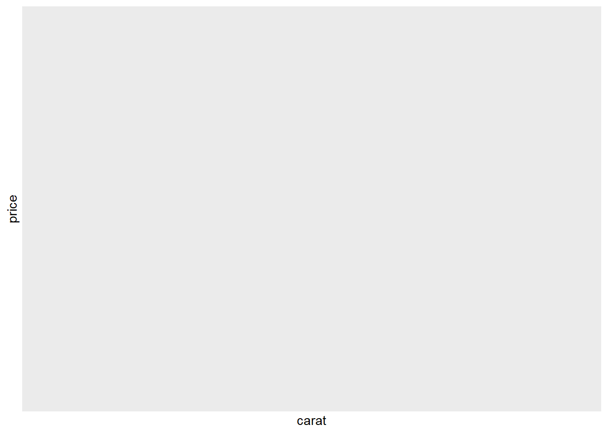

해당 교재는 https://r4ds.hadley.nz/ 에서 확인하실 수 있습니다. 이 문서에 존재하는 모든 인용은 Hadley Wickham (2023) 입니다.
Introduction
이 장에서는 시각화 및 변환을 사용하여 체계적인 방식으로 데이터를 탐색하는 방법, 즉 통계학자들이 탐색적 데이터 분석 또는 줄여서 EDA라고 부르는 작업에 대해서 소개합니다.
데이터에 대한 질문을 생성하세요.
데이터를 시각화, 변환 및 모델링하여 답을 찾아보세요.
학습한 내용을 사용하여 질문을 구체화하거나 새로운 질문을 생성합니다.
EDA는 엄격한 규칙이 있는 알고리즘이나 방법론이 아닙니다. EDA는 정신 혹은 과정의 상태입니다. EDA의 초기 단계에서는 떠오르는 모든 아이디어를 자유롭게 확인해야 합니다. 이러한 아이디어 중 일부는 실현될 수도 있고 일부는 막다른 골목에 부딪힐 수도 있습니다. 탐색을 계속하다 보면 몇 가지 가능성을 발견하게 되고, 집중하게 될 것이고, 결국에는 이를 문서로 작성하여 다른 사람들에게 전달할 수 있을 것입니다.
EDA is a state of mind.
EDA는 모든 데이터 분석에서 중요한 부분입니다. 질문이 주어지더라도 항상 데이터의 품질을 확인해야 합니다. 데이터 정리는 데이터가 기대에 부합하는지 여부에 대한 EDA의 한 가지 응용 분야일 뿐입니다. 데이터 정리를 수행하려면 시각화, 변환, 모델링 등 EDA의 모든 방법을 활용해야 합니다.
질문을 하고, 데이터로 답변하고, 새로운 질문을 하기 위해 dplyr 및 ggplot2에 대해 배운 내용을 함께 사용해보도록 하겠습니다.
library(tidyverse)
── Attaching core tidyverse packages ──────────────────────── tidyverse 2.0.0 ──
✔ dplyr 1.1.4 ✔ readr 2.1.5
✔ forcats 1.0.0 ✔ stringr 1.5.1
✔ ggplot2 3.5.1 ✔ tibble 3.2.1
✔ lubridate 1.9.3 ✔ tidyr 1.3.1
✔ purrr 1.0.2
── Conflicts ────────────────────────────────────────── tidyverse_conflicts() ──
✖ dplyr::filter() masks stats::filter()
✖ dplyr::lag() masks stats::lag()
ℹ Use the conflicted package (<http://conflicted.r-lib.org/>) to force all conflicts to become errors
Questions
“There are no routine statistical questions, only questionable statistical routines.” — Sir David Cox
“Far better an approximate answer to the right question, which is often vague, than an exact answer to the wrong question, which can always be made precise.” — John Tukey
EDA의 목표는 데이터에 대한 이해를 높이는 것입니다. 이를 위한 가장 쉬운 방법은 데이터를 찾아가는 도구로 질문을 사용하는 것입니다. 질문을 하면 데이터 집합의 특정 부분에 주의를 집중시키고 어떤 그래프, 모델 또는 변환을 만들지 결정하는 데 도움이 됩니다.
EDA는 근본적으로 창의적인 프로세스입니다. 대부분의 창의적인 프로세스와 마찬가지로 양질의 질문을 하기 위한 핵심은 많은 양의 질문을 생성하는 것입니다. 분석을 시작할 때 데이터 집합에서 어떤 인사이트를 얻을 수 있는지 모르기 때문에, 분석의 시작 단계에서 드러나는 질문을 하기는 어렵습니다. 반면에, 새로운 질문을 할 때마다 데이터의 새로운 측면에 노출되어 발견할 가능성이 높아집니다. 발견한 내용에 따라 새로운 질문으로 후속 질문을 하면 데이터에서 가장 흥미로운 부분을 빠르게 드릴다운하고 생각을 자극하는 일련의 질문을 개발할 수 있습니다.
연구를 안내하기 위해 어떤 질문을 해야 하는지에 대한 규칙은 없습니다. 하지만 두 가지 유형의 질문은 데이터 내에서 발견을 이끌어내는 데 항상 유용합니다. 이러한 질문은 다음과 같이 느슨하게 표현할 수 있습니다.
내 변수 내에서 어떤 유형의 변이가 발생하나요?
내 변수 간에 어떤 유형의 공변량이 발생하나요?
이 장의 나머지 부분에서는 이 두 가지 질문에 대해 살펴봅니다. 변이와 공변량이 무엇인지 설명하고 각 질문에 답하는 몇 가지 방법을 보여 드리겠습니다.
Variation
분포(Variation)란 측정할 때마다 변수의 값이 변하는 경향을 말합니다. 실생활에서 분포를 쉽게 볼 수 있는데, 연속적인 변수를 두 번 측정하면 두 가지 다른 결과를 얻을 수 있습니다. 이는 빛의 속도와 같이 일정한 양을 측정하는 경우에도 마찬가지입니다. 각 측정에는 측정마다 달라지는 소량의 오차가 포함됩니다. 다른 대상(예: 여러 사람의 눈 색깔)이나 다른 시간(예: 다른 순간의 전자의 에너지 준위)에 걸쳐 측정하는 경우에도 변수가 달라질 수 있습니다. 모든 변수에는 고유한 변화 패턴이 있으며, 이를 통해 동일한 관측에 대한 측정 간은 물론 여러 관측에 걸쳐 어떻게 변화하는지에 대한 흥미로운 정보를 얻을 수 있습니다. 이러한 패턴을 이해하는 가장 좋은 방법은 1장에서 배운 변수 값의 분포를 시각화하는 것입니다.
다이아몬드 데이터 집합에서 약 54,000개의 다이아몬드 무게(캐럿) 분포를 시각화하여 탐색을 시작하겠습니다. 캐럿은 숫자 변수이므로 히스토그램을 사용할 수 있습니다.
이제 분포를 시각화할 수 있게 되었으니 그래프에서 무엇을 찾아야 할까요? 어떤 유형의 후속 질문을 해야 할까요? 그래프에서 찾을 수 있는 가장 유용한 정보 유형과 각 정보 유형에 대한 몇 가지 후속 질문 목록을 아래에 정리해 두었습니다. 좋은 후속 질문의 핵심은 호기심(무엇을 더 알고 싶으신가요?)과 회의론(어떻게 오해의 소지가 있을 수 있나요?)에 의존하는 것입니다.
Typical values
막대 차트와 히스토그램 모두에서 긴 막대는 변수의 일반적인 값을 나타내고, 짧은 막대는 덜 일반적인 값을 나타냅니다. 막대가 없는 부분은 데이터에서 볼 수 없었던 값을 나타냅니다. 이 정보를 유용한 질문으로 전환하려면 예상치 못한 것이 있는지 찾아보세요.
비주얼리제이션을 통해 데이터에 하위 그룹이 존재함을 시사하는 클러스터를 확인할 수도 있습니다. 하위 그룹을 이해하려면 물어보세요.
각 하위 그룹 내의 관측값은 서로 어떻게 유사합니까?
개별 클러스터의 관측값은 서로 어떻게 다른가요?
클러스터를 어떻게 설명하거나 설명할 수 있나요?
클러스터의 모양이 오해의 소지가 있는 이유는 무엇인가요?
이러한 질문 중 일부는 데이터로 답할 수 있지만 일부는 데이터에 대한 도메인 전문 지식이 필요합니다. 예를 들어, 한 변수의 값이 다른 변수의 동작을 설명할 수 있는지 확인하는 등 변수 간의 관계를 탐색하라는 메시지가 표시되는 경우가 많습니다. 이에 대해서는 곧 설명하겠습니다.
Unusual values
이상값은 패턴에 맞지 않는 데이터와 같이 비정상적인 관측값을 말합니다. 이상값은 데이터 입력 오류일 때도 있고, 데이터 수집에서 우연히 관찰된 극단의 값일 때도 있으며, 중요한 새로운 발견을 암시하는 것일 때도 있습니다. 데이터가 많으면 히스토그램에서 이상값을 확인하기 어려운 경우가 있습니다. 예를 들어 다이아몬드 데이터 집합에서 y 변수의 분포를 살펴봅시다. 이상값의 유일한 증거는 X축의 한계가 비정상적으로 넓다는 것입니다.
coord_cartesian()에는 x축을 조정하는 xlim()도 있습니다. ggplot2에는 약간 다르게 작동하는 xlim() 및 ylim() 함수도 있는데, 이들은 한계 밖의 데이터를 버립니다. 이를 통해 세 가지 특이한 값이 있음을 알 수 있습니다: 0, ~30, ~60입니다. dplyr로 이를 추출합니다.
unusual <- diamonds |>filter(y <3| y >20) |>select(price, x, y, z) |>arrange(y)unusual
y 변수는 이러한 다이아몬드의 세 가지 치수 중 하나를 mm 단위로 측정합니다. 다이아몬드의 너비가 0 mm일 수 없다는 것을 알고 있으므로 이 값은 틀린 값이어야 합니다. EDA를 수행하면서 0으로 코딩된 누락된 데이터를 발견했는데, 이는 단순히 NA를 검색했다면 결코 발견하지 못했을 것입니다.
앞으로는 잘못된 계산을 방지하기 위해 이러한 값을 다시 NA로 변경할 수 있습니다. 32mm와 59mm`의 측정값이 믿을 수 없다고 의심할 수도 있습니다. 이 다이아몬드는 길이에 비해서 금액이 적절하지 않기 때문입니다. 결과에 미치는 영향이 미미하고 이상값이 존재하는 이유를 파악할 수 없는 경우에는 이상값을 생략하고 다음 단계로 넘어가는 것이 합리적입니다. 그러나 결과에 상당한 영향을 미치는 경우라면 정당한 이유 없이 삭제해서는 안 됩니다. 데이터 입력 오류 등의 원인을 파악하고 글에서 해당 항목을 삭제했음을 밝혀야 합니다.
Exercises
summary(select(diamonds, x, y, z))
x y z
Min. : 0.000 Min. : 0.000 Min. : 0.000
1st Qu.: 4.710 1st Qu.: 4.720 1st Qu.: 2.910
Median : 5.700 Median : 5.710 Median : 3.530
Mean : 5.731 Mean : 5.735 Mean : 3.539
3rd Qu.: 6.540 3rd Qu.: 6.540 3rd Qu.: 4.040
Max. :10.740 Max. :58.900 Max. :31.800
ggplot2는 데이터에서 정렬된 요소 변수로 정의되기 때문에 cut에 정렬된 색 눈금을 사용합니다. 전체 개수에 의해 결정되는 높이가 ’cut’에 따라 너무 많이 달라져 분포의 모양 차이를 확인하기 어렵기 때문에 geom_freqpoly()의 기본 모양은 여기서 그다지 유용하지 않습니다.
비교를 쉽게 하기 위해 Y축에 표시되는 내용을 바꿔야 합니다. 개수를 표시하는 대신 각 주파수 다각형 아래의 면적이 1이 되도록 표준화된 개수인 밀도를 표시합니다.
밀도를 ‘y’에 매핑하고 있지만 ’다이아몬드’ 데이터 집합에는 ’밀도’가 변수가 아니므로 먼저 밀도를 계산해야 합니다. 이를 위해 after_stat() 함수를 사용합니다. 이 플롯에는 다소 놀라운 점이 있는데, 가장 품질이 낮은 페어 다이아몬드의 평균 가격이 가장 높은 것으로 나타났습니다! 하지만 주파수 다각형이 해석하기 조금 어렵기 때문일 수도 있습니다. 이 플롯에는 많은 일이 일어나고 있습니다.
이 관계를 탐색하는 데 시각적으로 더 간단한 플롯은 나란히 배치된 박스 플롯을 사용하는 것입니다.
ggplot(diamonds, aes(x = cut, y = price)) +geom_boxplot()
분포에 대한 정보는 훨씬 적지만, 박스 플롯이 훨씬 더 간결해져 더 쉽게 비교할 수 있고 한 플롯에 더 많은 것을 담을 수 있습니다. 이는 일반적으로 더 좋은 품질의 다이아몬드가 더 저렴하다는 반직관적인 결과를 뒷받침합니다! 연습 문제에서는 그 이유를 알아내야 합니다.
cut은 순서가 있는 요소입니다. 즉, 보통은 좋음보다 나쁘고, 좋음은 매우 좋음보다 나쁘다는 식입니다. 많은 범주형 변수는 이러한 내재적 순서가 없으므로 더 많은 정보를 표시하기 위해 순서를 바꾸고 싶을 수 있습니다. 이를 위한 한 가지 방법은 fct_reorder()를 사용하는 것입니다. 예를 들어, mpg 데이터 집합의 class 변수를 살펴봅시다. 고속도로 주행 거리가 등급에 따라 어떻게 달라지는지 알고 싶을 수 있습니다.
ggplot(mpg, aes(x = class, y = hwy)) +geom_boxplot()
추세를 더 쉽게 볼 수 있도록 ’class’의 중앙값을 기준으로 ’hwy’의 순서를 바꿀 수 있습니다.
ggplot(mpg, aes(x =fct_reorder(class, hwy, median), y = hwy)) +geom_boxplot()
변수 이름이 긴 경우 geom_boxplot()을 90°로 뒤집으면 더 잘 작동합니다. X와 Y의 미적 매핑을 교환하면 됩니다.
ggplot(mpg, aes(x = hwy, y =fct_reorder(class, hwy, median))) +geom_boxplot()
Exercises
None
None
None
None
None
None
Two categorical variables
범주형 변수 간의 공변량을 시각화하려면 이러한 범주형 변수의 각 수준 조합에 대한 관찰 횟수를 계산해야 합니다. 이를 수행하는 한 가지 방법은 내장된 geom_count()를 사용하는 것입니다:
ggplot(diamonds, aes(x = cut, y = color)) +geom_count()
플롯에서 각 원의 크기는 각 값 조합에서 발생한 관찰 횟수를 표시합니다. 공변량은 특정 x 값과 특정 y 값 사이의 강한 상관관계로 나타납니다. 이러한 변수 간의 관계를 탐색하는 또 다른 접근 방식은 dplyr로 개수를 계산하는 것입니다.
diamonds |>count(color, cut)
# A tibble: 35 × 3
color cut n
<ord> <ord> <int>
1 D Fair 163
2 D Good 662
3 D Very Good 1513
4 D Premium 1603
5 D Ideal 2834
6 E Fair 224
7 E Good 933
8 E Very Good 2400
9 E Premium 2337
10 E Ideal 3903
# ℹ 25 more rows
범주형 변수의 순서가 지정되지 않은 경우, 흥미로운 패턴을 보다 명확하게 드러내기 위해 직렬화 패키지를 사용하여 행과 열의 순서를 동시에 재정렬할 수 있습니다. 더 큰 플롯의 경우 대화형 플롯을 만드는 히트맵리 패키지를 사용해 볼 수 있습니다.
Exercises
None
None
None
Two numerical variables
두 숫자 변수 간의 공분산을 시각화하는 한 가지 좋은 방법은 geom_point()로 산점도를 그리는 것입니다. 점의 패턴으로 공분산을 볼 수 있습니다. 예를 들어 다이아몬드의 캐럿 크기와 가격 간에 양의 관계가 있음을 알 수 있습니다. 캐럿이 많은 다이아몬드는 가격이 더 높습니다. 이 관계는 기하급수적입니다.
ggplot(smaller, aes(x = carat, y = price)) +geom_point()
분산형 차트는 데이터 집합의 크기가 커지면 점들이 겹치기 시작하고 균일한 검은색 영역으로 쌓이기 시작하여 2차원 공간에서 데이터 밀도의 차이를 판단하기 어려울 뿐만 아니라 추세를 파악하기 어렵게 되므로 그 유용성이 떨어집니다. 이 문제를 해결할 수 있는 한 가지 방법은 ‘알파’ 미학을 사용하여 투명도를 추가하는 것입니다.
ggplot(smaller, aes(x = carat, y = price)) +geom_point(alpha =1/100)
ggplot(smaller, aes(x = carat, y = price)) +geom_bin2d()
# install.packages("hexbin")ggplot(smaller, aes(x = carat, y = price)) +geom_hex()
Warning: Computation failed in `stat_binhex()`.
Caused by error in `compute_group()`:
! The package "hexbin" is required for `stat_bin_hex()`.

ggplot(smaller, aes(x = carat, y = price)) +geom_boxplot(aes(group =cut_width(carat, 0.1)))